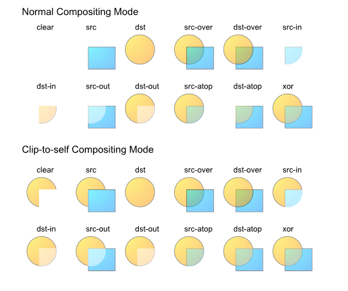

Compositing describes how shapes of different elements are combined into a single image.
There are various possible approaches for compositing.
Previous versions of SVG used Simple Alpha Compositing.
In this model, each element is rendered into its own buffer and is then merged with its backdrop using the Porter Duff source-over operator.
This specification will define a new compositing model that expands upon the Simple Alpha Compositing model by offering:
The first part of this document will describe the algorithms of Porter Duff compositing and blending.
The second part describes the properties used to control the compositing in CSS.
Compositing is the combining of a graphic element with its backdrop.
The figure below, gives a basic example of compositing. The graphic element, a ... in this case, is overlaid on top of the backdrop to produce a composite image.
Where the graphic element is opaque, it obscures the backdrop and where the graphic element is partially transparent, some of the backdrop can be seen through.
Add a pretty picture. I'm thinking a house with a window that is transparent overlaid on a mountain scene.
In the model described in this specification there are two steps to the overall compositing operation - Porter Duff compositing and blending.
Porter Duff compositing takes into account the overall shape of the graphic element and its opacity, as well as the opacity and shape of the backdrop, and
determines where the backdrop is visible, where the graphic element is visible and where one is visible through the other.
The blending step determines how the colors from the graphic element and the backdrop interact.
Typically, the blending step is performed first, followed by the PD compositing step.
In the blending step, the resultant color from the mix of the element and the the backdrop is calculated. The graphic element's color is replaced with this resultant color.
The graphic element is then composited with the backdrop using the specified compositing operator.
Shape is defined by the mathematical description of the shape. Shape either exists at a particular point or it does not. There are no gradations.
Opacity is described using an alpha value, stored alongside the color value for each particular point. The alpha value is between 0 and 1, inclusive.
A value of 0 means that the pixel has no coverage at that point, and is therefore
transparent; i.e. there is no color contribution from any geometry because the geometry does not overlap this pixel. A value of 1 means that the pixel is fully opaque; the geometry completely overlaps the pixel.
The simple alpha compositing model used in previous versions of SVG allowed for the illusion of partial or full transparency.
While this specification provides the author the choice of many Porter Duff compositing operators and many blending modes, the simple alpha compositing
model forced a single Porter Duff compositing operator and a single blend mode.
All values are between 0 and 1 inclusive.
The pixel value after compositing (co) is given by adding the contributions from the source graphic element [Cs x αs] and the backdrop [Cb x αb x (1 - αs)].
For both the graphic element and the backdrop, the color values are multiplied by the alpha to determine the amount of color that contributes.
With zero alpha meaning that the color does not contribute and partial alpha means that some percentage of the color contributes.
The contribution of the backdrop is further reduced based on the opacity of the graphic element.
Conceptually, (1 - αs) of the backdrop shows through the graphic element, meaning that if the graphic element is fully opaque (αs=1) then no backdrop shows through.
The simple alpha compositing formula listed above gives a resultant color which is the result of the
weighted average of the backdrop color and graphic element color, with the weighting determined by the backdrop and
graphic element alphas.
The resultant alpha value of the composite is simply the sum of the contributed alpha of the composited elements.
The formula for the resultant alpha of the composite is
Thus the formula for simple alpha compositing using pre-multplied values becomes
To extract the color component of a pre-multiplied value, the formula is reversed:
The general formula for compositing and blending which allows for selection of the compositing operator and blending function comprises two steps.
The terms used in these functions will be described in detail in the following sections.
The backdrop is the content behind the element and is what the element is composited with.
This means that the backdrop is the result of compositing all previous elements.
Compositing groups allow more control over the interaction of compositing with the backdrop. Groups can be used to specify how a compositing effect
within a group will interact with the content that is already in the scene (the backdrop).
Compositing groups may be made up of any number of elements, and may contain other compositing groups.
The default properties of a compositing group shall cause no visual difference compared to no groups. See Group Invariance.
The result of this is that single elements behave as if they were in a group by themselves.
A compositing group is rendered by first compositing the elements of the group onto the inital backdrop. The result of this is a single element containing
color and alpha information. This element is then composited onto the group backdrop.
Steps shall be taken to ensure the group backdrop makes only a single contribution to the final composite.
- initial backdrop
-
The intial backdrop is the backdrop selected for compositing the group's first element. This will be the same as the group backdrop in a non-isolated
group, or a fully transparent backdrop for an isolated group.
- group backdrop
-
The group backdrop is the result of compositing all elements up to but not including the frist element in the group.
The use of knockout groups changes this definition.
Group invariance
An important behavior of simple alpha compositing is its group invariance. This behaviour is preserved in the more complex model described in this specification.
Adding or removing grouping with default attributes shall not show visual differences.
so: A + B + C = A + (B + C) = (A + B) + C
When adding attributes to the group such as knockout, isolate, blending modes other than normal or Porter Duff compositing operators other than source-over, groups may no longer be invariant.
Isolated Groups
Isolated groups are controlled with the isolation property.
In an isolated group, the initial backdrop shall be black and fully transparent - RGBA(0, 0, 0, 0).
In this instance, the initial backdrop is different than the group backdrop. The only interaction with the group backdrop shall occur when the group's
computed color, shape and alpha are composited with it.
See 'Isolated groups and Porter Duff modes' for a description of the effect of isolated groups on compositing.
See 'Effect of group isolation on blending' for a description of the effect of isolated groups on blending.
Knockout Groups
In a knockout group, each individual element shall be composited with the initial backdrop rather than with the stack of preceeding elements in the group.
When calculating the backdrop for an element inside a knockout group, the elements of the group are ignored. Instead, only the elements that are behind the knockout group are included in the backdrop.
The above example demonstrates two versions of a group containing three squares (red, green, blue) that are 50% opaque. The group is composited over a grey striped background.
On the left, the group has the 'knock-out' property set to 'knock-out'. On the right, the group has the 'knock-out' property set to 'preserve'.
If the 'knock-out' property has the value 'knock-out', each element within the group is only composited with the elements underneath the group.
The Page Group
The top level group is the page group. All other elements and groups are composited into this group.
The page group is an isolated group.
The page group is composited with a backdrop color defined by the User Agent. Typically this will be white with 100% opacity.
The page group may be used as an element in another graphical composition.
For example,
an SVG file contains a red object at 50% opacity,
The user agent composites the page group onto a white background with 100% opacity.
The results are as follows:
co = RGB(255, 0, 0) * .5 + RGB(255, 255, 255) * 1 * (1 - .5)
co = RGB(127, 0, 0) + RGB(127, 127, 127)
co = RGB(255, 127, 127)
which is the color value ultimately displayed by the user agent.
Advanced compositing features
Simple alpha compositing uses the source-over Porter Duff compositing operator. Additional compositing operators exist and may be specified with the alpha-compositing property.
The additional compositing operators allow for more complex interactions between the shapes of elements being composited. The compositing operators are described in 'The Porter Duff compositing operators'.
The operators that applies to an element or group is selected using the alpha-compositing property.
Porter Duff compositing is based on a model of a pixel in which two shapes (source and destination) may contribute to the final color of the pixel. The pixel is divided into 4 sub-pixel regions and each region represents a possible combination of source and destination.
The four regions are:
- Source Only
- Where only the source contributes to the pixel color
- Destination only
- where only the destination contributes to the pixel color
- Both
- Source and Destination – where both the source and destination may combine to define the pixel color
- None
- No source or Destination – where neither make a contribution to the final pixel color
Destination is synonymous with backdrop. The term destination is used in this section as this is considered the standard when working with Porter Duff compositing. Additionally, the compositing operators use 'destination' in their names.
The contribution from each region to the final pixel color is defined by the coverage of the shape at that pixel, and the operator in use.
Coverage is specified in terms of alpha. Full alpha (1) implies full coverage, while zero alpha implies no coverage.
This means that the area of each region within the sub-pixel is dependent on the coverage of each shape contributing to the pixel.
The area of each region can be calculated with the following equations:
| Both |
αs x αb |
| Source only |
αs(1 – αb) |
| Destination only |
αb(1 – αs) |
| None |
(1 – αs)(1 – αb) |
The figure above represents coverage of 0.5 for both source and destination.
Both = 0.5 x 0.5 = 0.25
Source Only = 0.5 (1 – 0.5) = 0.25
Destination Only = 0.5(1 – 0.5) = 0.25
None = (1 – 0.5)(1 – 0.5) = 0.25
Therefore, the area of each region is 25% in this example.
The Porter Duff Compositing Operators
The landmark 1984 paper [3] by Thomas Porter and Tom Duff, who worked for Lucasfilm, defined the algebra of compositing and developed the twelve "Porter Duff" operators. These operators control the results of mixing the four sub-pixel regions formed by the overlapping of graphical objects that have an alpha or pixel coverage channel/value. The operators use all practical combinations of the four regions.
There are 12 basic Porter Duff operators, satisfying all possible combinations of source and destination.
From the geometric representation of each operator, the contribution of each shape can be seen to be expressed as a fraction of the total coverage of the output.
For example, in source over, the possible contribution of source is full (1) and the possible contribution of destination is whatever is remaining (1 – αs). This is modified by the coverage of source and destination to give the equation for the final coverage of the pixel:
αo = αs x 1 + αb x (1 – αs)
The fractional terms Fa (1 in this example) and Fb (1 – αs in this example) are defined for each operator and specify the fraction of the shapes that may contribute to the final pixel value.
The general form of the equation for coverage is:
αs x Fa + αb x Fb
and incorporating color gives the general Porter Duff equation
co = αs x Fa x Cs + αb x Fb x Cb
Where: co is the output color pre-multiplied with the output alpha [0 <= co <= 1] αs is the coverage of the source Fa is defined by the operator and controls inclusion of the source Cs is the color of the source (not multiplied by alpha) αb is the coverage of the destination Fb is defined by the operator and controls inclusion of the destination Cb is the color of the destination (not multiplied by alpha)
Clear
No regions are enabled.

Fa = 0; Fb = 0
co = 0
αo = 0
Source
Only the source will be present.

Fa = 1; Fb = 0
co = αs x Cs
αo = αs
Destination
Only the destination will be present.

Fa = 0; Fb = 1
co = αb x Cb
αo = αb
Source Over
Source is placed over the destination

Fa = 1; Fb = 1 – αs
co = αs x Cs + αb x Cb x (1 – αs)
αo = αs + αb x (1 – αs)
Destination Over
Destination is placed over the source.

Fa = 1 – αb; Fb = 1
co = αs x Cs x (1 – αb) + αb x Cb
αo = αs x (1 – αb) + αb
Source In

The source that overlaps the destination, replaces the destination.
Fa = αb; Fb = 0
co = αs x Cs x αb
αo = αs x αb
Destination In
Destination which overlaps the source, replaces the source.

Fa = 0 Fb = αs
co = αb x Cb x αs αo = αb x αs
Source Out
Source is placed, where it falls outside of the destination.

Fa = 1 – αb; Fb = 0
co = αs x Cs x (1 – αb)
αo = αs x (1 – αb)
Destination Out
Destination is placed, where it falls outside of the source.

Fa = 0; Fb = 1 – αs
co = αb x Cb x (1 – αs)
αo = αb x (1 – αs)
Source Atop
Source which overlaps the destination, replaces the destination. Destination is placed elsewhere.

Fa = αb; Fb = 1 – αs
co = αs x Cs x αb + αb x Cb x (1 – αs)
αo = αs x αb + αb x (1 – αs)
Destination Atop

Destination which overlaps the source replaces the source. Source is placed elsewhere.
Fa = 1 - αb; Fb = αs
co = αs x Cs x (1 - αb) + αb x Cb x αs
αo = αs x (1 - αb) + αb x αs
XOR
The non-overlapping regions of source and destination are combined.

Fa = 1 - αb; Fb = 1 – αs
co = αs x Cs x (1 - αb) + αb x Cb x (1 – αs)
αo = αs x (1 - αb) + αb x (1 – αs)
Plus
Plus is an additional operator that is defined in the Porter Duff paper [3].
Fa = 1; Fb = 1
co = αs x Cs + αb x Cb;
αo = αs + αb
Group compositing behavior with Porter Duff modes
Isolated groups and Porter Duff modes
When compositing the elements within an isolated group, the elements are composited over an empty (RGBA(0, 0, 0, 0)) initial backdrop. If the bottom element in the group uses a Porter Duff compositing operator
which is dependent on the backdrop, such as destination, source-in,
destination-in, destination-out or source-atop,
then the result of the composite will be empty. Subsequent elements within the group are composited with the result of the first composite.
Knockout groups and Porter Duff modes
Every element within a knock-out group is composited with the initial backdrop.
This means, that for every element within the group, the backdrop for the compositing of that element, is the initial backdrop.
In the example below, the elements within the group (the circle and the square) are composited using the source-atop operator, with only the hexagon.
This has the effect of "knocking out" the circle, where it is overlapped by the square.
Additionally, because the source-atop Porter Duff operator is used, the source shape (either the square or the circle) is only placed where the backdrop exists (the backdrop being the hexagon for both compositing operations within the group).
Clip to self behavior
When compositing, the areas of the composite that may be modified by the compositing operation, must fall within the shape of the element being composited (i.e. where α > 0).
This is known as "clip to self" in some graphics libraries.
The alternative is to not clip the compositing operation at all. The results can be seen below.
Some of the Porter Duff operators are unchanged, because they normally have no effect outside the source region. The changes can be seen in the clear, source, source-in, destination-in, source-out and destination-atop.

Blending
Blending is the aspect of compositing that calculates the mixing of colors where the source element and backdrop overlap.
Blending takes the colors of the source element and mixes them with the backdrop in areas where the source element and backdrop overlap.
Conceptually, the colors in the source element are blended in place with the backdrop.
After blending, the modified source element is composited with the backdrop.
In practice, this is usually all performed in one step.
The blending calcualtions must not use pre-multiplied color values.
The "mixing" formula is defined as:
Cm = B(Cb, Cs)
with:
Cm: the result color after blending
B: the formula that does the blending
Cb: the backdrop color
Cs: the source color
The result of the mixing formula must be clamped to the minimum and maximum values of the color range.
The result of the mixing function is modulated by the backdrop alpha. A fully opaque backdrop allows the mixing function to be fully realised.
A transparent backdrop will cause the final result to be a weighted average between the source color and mixed color with the weight controlled by the backdrop alpha.
The value of the new color becomes:
Cr = (1 - αb) x Cs + αb x B(Cb, Cs)
with:
Cr: the result color
B: the formula that does the blending
Cs: the source color
Cb: the backdrop color
αb: the backdrop alpha

This example has a red rectangle with a blending mode that is placed on top of a set of green rectangles that have different levels of opacity.
Note how the top rectangle shifts more toward red as the opacity of the backdrop lowers.
The following formula gives the color value in the area where the source and backdrop intersects and then composites with the specified Porter Duff compositing formula. For simple alpha blending, the formula thus becomes:
simple alpha compositing:
co = cs + cb x (1 - αs)
written as non-premultiplied:
αo x Co = αs x Cs + (1 - αs) x αb x Cb
now subsitute the result of blending for Cs:
αo x Co = αs x ((1 - αb) x Cs + αb x B(Cb, Cs)) + (1 - αs) x αb x Cb
= αs x (1 - αb) x Cs + αs x αb x B(Cb, Cs) + (1 - αs) x αb x Cb
Separable blend modes
A blend mode is termed separable if each component of the result color is completely determined by the corresponding components of the constituent backdrop and source colors — that is, if the mixing formula is applied separately to each set of corresponding components.
Each of the following blend modes will apply the blending function B(Cb, Cs) on each of the color components.
For simplicity, all the examples in this chapter use source-over compositing.
'normal' blend mode
This is the default attribute which specifies no blending. The blending formula simply select the source color.
B(Cb, Cs) = Cs

'multiply' blend mode
The source color is multiplied by the destination color and replaces the destination.
The resultant color is always at least as dark as either the source or destination color. Multiplying any color with black results in black. Multiplying any color with white preserves the original color.
B(Cb, Cs) = Cb x Cs

'screen' blend mode
Multiplies the complements of the backdrop and source color values, then complements the result.
The result color is always at least as light as either of the two constituent colors. Screening any color with white produces white; screening with black leaves the original color unchanged. The effect is similar to projecting multiple photographic slides simultaneously onto a single screen.
B(Cb, Cs) = 1 - [(1 - Cb) x (1 - Cs)]
= Cb + Cs -(Cb x Cs)

'overlay' blend mode
Multiplies or screens the colors, depending on the backdrop color value.
Source colors overlay the backdrop while preserving its highlights and shadows. The backdrop color is not replaced but is mixed with the source color to reflect the lightness or darkness of the backdrop.
B(Cb, Cs) = HardLight(Cs, Cb)
Overlay is the inverse of the 'hardlight' blend mode. See the definition of 'hardlight' for the formula.

'darken' blend mode
Selects the darker of the backdrop and source colors.
The backdrop is replaced with the source where the source is darker; otherwise, it is left unchanged.
B(Cb, Cs) = min(Cb, Cs)

'lighten' blend mode
Selects the lighter of the backdrop and source colors.
The backdrop is replaced with the source where the source is lighter; otherwise, it is left unchanged.
B(Cb, Cs) = max(Cb, Cs)

'color-dodge' blend mode
Brightens the backdrop color to reflect the source color. Painting with black produces no changes.
if(Cs < 1)
B(Cb, Cs) = min(1, Cb / (1 - Cs))
else
B(Cb, Cs) = 1

'color-burn' blend mode
Darkens the backdrop color to reflect the source color. Painting with white produces no change.
if(Cs > 0)
B(Cb, Cs) = 1 - min(1, (1 - Cb) / Cs)
else
B(Cb, Cs) = 0

'hard-light' blend mode
Multiplies or screens the colors, depending on the source color value. The effect is similar to shining a harsh spotlight on the backdrop.
if(Cs <= 0.5)
B(Cb, Cs) = Multiply(Cb, 2 x Cs)
else
B(Cb, Cs) = Screen(Cb, 2 x Cs -1)
See the definition of 'multiply' and 'screen' for their formulas.

'soft-light' blend mode
Darkens or lightens the colors, depending on the source color value. The effect is similar to shining a diffused spotlight on the backdrop
if(Cs <= 0.5)
B(Cb, Cs) = Cb - (1 - 2 x Cs) x Cb x (1 - Cb)
else
B(Cb, Cs) = Cb + (2 x Cs - 1) x (D(Cb) - Cb)
with
if(Cb <= 0.25)
D(Cb) = ((16 * Cb - 12) x Cb + 4) x Cb
else
D(Cb) = sqrt(Cb)

'difference' blend mode
Subtracts the darker of the two constituent colors from the lighter color.
Painting with white inverts the backdrop color; painting with black produces no change.
B(Cb, Cs) = | Cb - Cs |

'exclusion' blend mode
Produces an effect similar to that of the Difference mode but lower in contrast. Painting with white inverts the backdrop color; painting with black produces no change
B(Cb, Cs) = Cb + Cs - 2 x Cb x Cs

Non-separable blend modes
Nonseparable blend modes consider all color components in combination as opposed to the seperable ones that look at each component individually.
All of these blend modes conceptually entail the following steps:
a) Convert the backdrop and source colors from the blending color space to an intermediate hue-saturation-luminosity representation.
b) Create a new color from some combination of hue, saturation, and luminosity components selected from the backdrop and source colors.
c) Convert the result back to the original color space.
The nonseparable blend mode formulas make use of several auxiliary functions:
Lum(C) = 0.3 x Cred + 0.59 x Cgreen + 0.11 x Cblue
ClipColor(C)
L = Lum(C)
n = min(Cred, Cgreen, Cblue)
x = max(Cred, Cgreen, Cblue)
if(n < 0)
C = L + (((C - L) * L) / (L - n))
if(x > 1)
C = l + (((Cred - L) * (1 - L) / (x - L))
return C
SetLum(C, l)
d = l - Lum(C)
Cred = Cred + d
Cgreen = Cgreen + d
Cblue = Cblue + d
return ClipColor(C)
Sat(C) = max(Cred, Cgreen, Cblue) - min(Cred, Cgreen, Cblue)
The subscripts min, mid, and max in the next function refer to the color
components having the minimum, middle, and maximum values upon entry to the function.
SetSat(C, s)
if(Cmax > Cmin)
Cmid = (((Cmid - Cmin) x s) / (Cmax - Cmin))
Cmax = s
else
Cmid = Cmax = 0
Cmin = 0
return C;
'hue' blend mode
Creates a color with the hue of the source color and the saturation and luminosity of the backdrop color.
B(Cb, Cs) = SetLum(SetSat(Cs, Sat(Cb)), Lum(Cb))

'saturation' blend mode
Creates a color with the saturation of the source color and the hue and luminosity of the backdrop color. Painting with this mode in an area of the backdrop that is a pure gray (no saturation) produces no change.
B(Cb, Cs) = SetLum(SetSat(Cb, Sat(Cs)), Lum(Cb))

'color' blend mode
Creates a color with the hue and saturation of the source color and the luminosity of the backdrop color. This preserves the gray levels of the backdrop and is useful for coloring monochrome images or tinting color images.
B(Cb, Cs) = SetLum(Cs, Lum(Cb))

'luminosity' blend mode
Creates a color with the luminosity of the source color and the hue and saturation of the backdrop color. This produces an inverse effect to that of the Color mode.
B(Cb, Cs) = SetLum(Cb, Lum(Cs))

Effect of group isolation on blending
In the following example, the elements used to construct the paper aeroplane are within a group. Each of these elements has the blend-mode property set to multiply.
The aeroplane on the left is a normal group, the aeroplane on the right is an isolated group.
In the isolated group, the elements within the group are composited onto an empty initial backdrop, this stops the elements within the group multiplying with the backdrop.
In the normal group, the elements within the group are composited onto the initial backdrop containing the land and sky. Therefore the elements of the aeroplane multiply with the land and sky.
In both instances, the result of the group composite is composited onto the land and sky using the normal blend-mode (the default blend-mode applied to the group).
Specifying Compositing and Blending in CSS
Behavior specific to CSS
If an element specifies non-default blending, compositing or 'opacity', its transform-style and that of all of its children will revert to 'flat'.
The application of non-default blending or compositing to an element formatted with the CSS box model also establishes a stacking context the same way that CSS 'opacity' does. One of the consequences is that elements with z-index will not honor the depth of elements outside of the group.
The following definition needs to be elaborated
Order: first filtering is applied, followed by blending and then compositing.
The following definition is incorrect and will be rewritten based on the stacking context
Conceptually all HTML elements are part of a group that consists of the following sub groups, each containing a single element.
In stacking order:
- the box shadow
- the background layers
- the text shadow
- the text and nested elements
Properties
The 'alpha-compositing' property
The description of the 'alpha-compositing' property is
as follows:
- 'alpha-compositing'
-
| Value: |
clear | source | destination | source-over | destination-over | source-in | destination-in | source-out | destination-out | source-atop | destination-atop | xor | plus |
| Initial: |
source-over |
| Applies to: |
All elements. In SVG, it applies to svg, g, use, image, path, rect, circle, ellipse, line, polyline, polygon, text, tspan, and marker. |
| Inherited: |
no |
| Percentages: |
N/A |
| Media: |
visual |
| Animatable: |
no |
Elements will always composite with 'clip-to-self' set to 'true'.
The 'blend-mode' property
Defines the blend mode used when compositing an element onto the page.
The blend mode defines the formula used to mix colors when shapes overlap.
This behaviour is described in more detail in Blending.
- 'blend-mode'
-
| Value: |
normal | multiply | screen | overlay | darken | lighten | color-dodge | color-burn | hard-light | soft-light | difference | exclusion | hue | saturation | color | luminosity |
| Initial: |
normal |
| Applies to: |
All elements. In SVG, it applies to svg, g, use, image, path, rect, circle, ellipse, line, polyline, polygon, text, tspan, and marker. |
| Inherited: |
no |
| Percentages: |
N/A |
| Media: |
visual |
| Animatable: |
no |
The 'isolation' property
Defines whether a group is isolated or not.
When a group is isolated, the elements within the group are composited onto an empty backdrop, prior to the group being composited onto the page.
The default behaviour is for groups to be non-isolated. In this case, the elements within the group are composited onto a backdrop made up of everything underneath the group. The group is then composited onto the page.
This behaviour is described in more detail in Isolated Gropus.
- 'isolation'
-
| Value: |
accumulate | isolate |
| Initial: |
accumulate |
| Applies to: |
All HTML elements. In SVG, it applies to all container elements except 'mask' |
| Inherited: |
yes |
| Percentages: |
N/A |
| Media: |
visual |
| Animatable: |
no |
For an individual layer 'isolation' is always 'isolate'. This means that the content of a layer always establishes its own context. For instance, if you link to an SVG file through the 'img' tag, the content of that SVG will not blend with the content in other layers or the content that is underneath.
The 'knock-out' property
Defines whether a group is a knock-out group.
When knock-out="knock-out", the group is a knock-out group. The elements within the group are always composited onto the initial backdrop. This effectively 'knocks out' any element from within the group that is already drawn.
When knock-out="preserve", the group is not a knock-out group. Elements within the group are composited onto one another, with the first element in the group being composited onto the initial backdrop.
This behavior of this keyword is described in more detail in Knockout Groups.
- 'knock-out'
-
| Value: |
preserve | knock-out |
| Initial: |
preserve |
| Applies to: |
All HTML elements. In SVG, it applies to all container elements except 'mask' |
| Inherited: |
yes |
| Percentages: |
N/A |
| Media: |
visual |
| Animatable: |
no |
Note that knockout applies to blending as well as compositing. The end result is if every shape composites with a 'clear' operation (with clip-to-self enabled) before it blends and composites.
Specifying blending and compositing in the element background
An author might want to specify the blending of multiple backgrounds of an element. The background compositing and blending is always treated as an isolated group.
The 'background-alpha-compositing' property
The description of the 'background-alpha-compositing' property is
as follows:
- 'background-alpha-compositing'
-
| Value: |
compositing-style [, compositing-style]* |
| Initial: |
source-over |
| Applies to: |
All HTML elements" |
| Inherited: |
no |
| Percentages: |
N/A |
| Media: |
visual |
| Animatable: |
no |
compositing-style = clear | source | destination | source-over | destination-over | source-in | destination-in | source-out | destination-out | source-atop | destination-atop | xor | plus
Background images will always composite with each other with 'clip-to-self' set to 'false'.
The 'background-blend-mode' property
The description of the 'background-blend-mode' property is
as follows:
- 'background-blend-mode'
-
| Value: |
blend-style [, blend-style]* |
| Initial: |
normal |
| Applies to: |
All HTML elements |
| Inherited: |
no |
| Percentages: |
N/A |
| Media: |
visual |
| Animatable: |
no |
blend-style = normal | multiply | screen | overlay | darken | lighten | color-dodge | color-burn | hard-light | soft-light | difference | exclusion | hue | saturation | color | luminosity
The 'box-shadow-blend-mode' property
Sets the blend mode of the box shadow.
Also needs to be added to the shorthand.
The description of the 'box-shadow-blend-mode' property is
as follows:
- 'box-shadow-blend-mode'
-
| Value: |
blend-style [, blend-style]* |
| Initial: |
normal |
| Applies to: |
All HTML elements |
| Inherited: |
no |
| Percentages: |
N/A |
| Media: |
visual |
| Animatable: |
no |
blend-style = normal | multiply | screen | overlay | darken | lighten | color-dodge | color-burn | hard-light | soft-light | difference | exclusion | hue | saturation | color | luminosity
The 'text-shadow-blend-mode' property
DRAFT.This proposal needs more discussion.
Set the blend mode of the text shadow.
Also needs to be added to the shorthand.
The description of the 'text-shadow-blend-mode' property is
as follows:
- 'text-shadow-blend-mode'
-
| Value: |
blend-style [, blend-style]* |
| Initial: |
normal |
| Applies to: |
All HTML elements |
| Inherited: |
no |
| Percentages: |
N/A |
| Media: |
visual |
| Animatable: |
no |
blend-style = normal | multiply | screen | overlay | darken | lighten | color-dodge | color-burn | hard-light | soft-light | difference | exclusion | hue | saturation | color | luminosity
The 'foreground-blend-mode' property
Sets the blend mode of the text or nested elements.
Also needs to be added to the shorthand.
The description of the 'foreground-blend-mode' property is
as follows:
- 'foreground-blend-mode'
-
| Value: |
blend-style |
| Initial: |
normal |
| Applies to: |
All HTML elements |
| Inherited: |
no |
| Percentages: |
N/A |
| Media: |
visual |
| Animatable: |
no |
blend-style = normal | multiply | screen | overlay | darken | lighten | color-dodge | color-burn | hard-light | soft-light | difference | exclusion | hue | saturation | color | luminosity
Alternate proposal
To cut down on the number of new keywords, we could extend blend-mode to take the following additional parameters:
- box-shadow
- list of blendmodes that target each shadow
- background
- list of blendmodes that target each background layer
- text-shadow
- list of blendmodes that target each text shadow
- foreground
- blendmode that targets the text and nested elements
A possible drawback is that there are no other keywords that target all these layers at once.
blending and compositing on borders
Is there a need to target this part of the element?
Specifying Compositing and Blending in Canvas
Please see the W3 wiki.
Security issues with compositing and blending
It is important that the timing to the blending and compositing operations is independant of the source and destination pixel. In other words, operations should be implemented in such a way that they always take the same amount of time regardless of the pixel values.
If this rule is not followed, an attacker could mount a timing attack.
A timing attack is a method of obtaining information about content that
is otherwise protected, based on studying the amount of time it takes for
an operation to occur.If, for example, red pixels took longer to
draw than green pixels, one might be able to reconstruct a rough image of
the element being rendered, even without ever having access to the content
of the element.
References
Normative References
- [CSS21]
- Cascading Style Sheets Level 2 Revision 1 (CSS 2.1) Specification,
Bert Bos, Tantek Çelik, Ian Hickson, Håkon Wium Lie, eds.,
W3C, 23 April 2009, (Candidate Recommendation)
- [NVDL]
- Document Schema Definition Languages (DSDL) — Part 4:
Namespace-based Validation Dispatching Language — NVDL. ISO/IEC FCD
19757-4, See http://www.asahi-net.or.jp/~eb2m-mrt/dsdl/
- [PORTERDUFF]
- Compositing Digital Images, T. Porter, T. Duff,
SIGGRAPH '84 Conference Proceedings, Association for Computing
Machinery, Volume 18, Number 3, July 1984.
- [SVG-COMPOSITING]
-
SVG Compositing Specification,
A. Grasso, ed.
World Wide Web Consortium, 30 April 2009.
The latest edition of SVG Compositing is available at
http://www.w3.org/TR/SVGCompositing/.
- [RelaxNG]
- Document Schema Definition Languages (DSDL) — Part 2:
Regular grammar- based validation — RELAX NG. ISO/IEC FDIS
19757-2:2002(E), J. Clark, 村田 真 (Murata M.), eds., 12 December 2002. See http://www.y12.doe.gov/sgml/sc34/document/0362_files/relaxng-is.pdf
- [Schema2]
- XML Schema Part 2: Datatypes Second Edition, P.
Biron, A. Malhotra, eds. W3C, 28 October 2004 (Recommendation). Latest
version available at http://www.w3.org/TR/xmlschema-2/.
See also Processing
XML 1.1 documents with XML Schema 1.0 processors.
- [SVG11]
- Scalable Vector Graphics (SVG) 1.1 Specification,
Dean Jackson editor, W3C, 14 January 2003 (Recommendation). See http://www.w3.org/TR/2003/REC-SVG11-20030114/
- [SVGT12]
- Scalable Vector Graphics (SVG) Tiny 1.2 Specification,
Dean Jackson editor, W3C, 22 December 2008 (Recommendation). See http://www.w3.org/TR/2008/REC-SVGTiny12-20081222/
- [HTML5]
- HTML5, Ian Hickson editor, Google,
10 June 2008 (Working Draft). See http://www.w3.org/TR/2008/WD-html5-20080610/